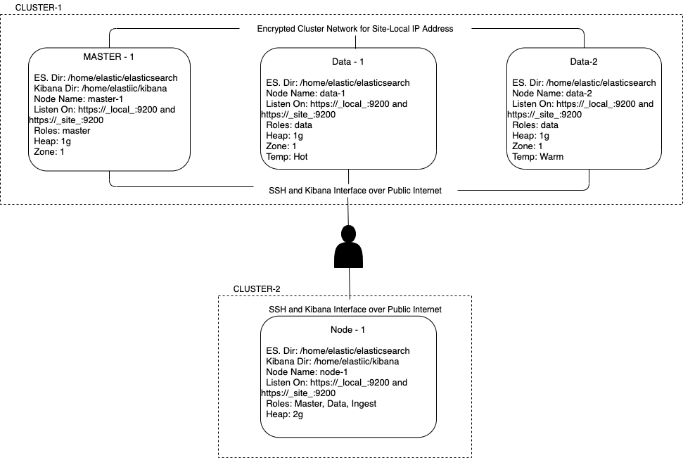

Deploying an ES Cluster
Topics covered here
- Prepare a Linux system for Elasticsearch
- Deploy Elasticsearch from and archive
- Configure a multi-node cluster
- Add custom node attributes
- Bind Elasticsearch to specific addresses
- Configure node roles
- Name a cluster
- Name each node in a cluster
- Configure node discovery
- Configure a single-node cluster
- Start Elasticsearch
- Deploy Kibana
- Configure Kibana
- Start Kibana
Prepare a Linux system for Elasticsearch
We will be deploying two ES cluster with the following specification
Cluster-1: total 3 nodes - 1 Master + Kibana Node - 2 Data Nodes
Cluster-2: total 1 nodes - 1 Master + Kibana Node
Why two clusters, this is to demonstrate
- Cross Cluster search functionality
- Cross Cluster Replication
- Backups and Restore Operations
Architecture
The below will be the architecture of the cluster we will be creating.

Implementation
For implementing the above architecture we will follow the following approaches:
-
Cloud Based VMs Spin up 4 small nodes with 2g memory, do check u can ssh into each of the nodes. The
-
Vagrant Based VMs Will be covered in the next sections.
Deploy Elasticsearch from and archive
- create a user "elastic"
- Disabling the swap space
- file descriptors or file handles increased, "elastic - nofile 65536" >> add this to /etc/security/limits.conf
- Virtual memory increased, "vm.max_map_count = 262144" >> /etc/sysctl.conf
- Increase number of threads, "elastic - nproc 4096" >> add this to /etc/security/limits.conf
- Address space to unlimited [Part of Bootstrap check]
Run the file with sudo privileges
#!/bin/bash
useradd elastic
swapoff -a
# sed to comment the swap partition in /etc/fstab and keep a backup
sed -i.bak -r 's/(.+ swap .+)/#\1/' /etc/fstab
echo "elastic - nofile 65536" >> /etc/security/limits.conf
echo "vm.max_map_count = 262144" >> /etc/sysctl.conf
echo "elastic - nproc 4096" >> /etc/security/limits.conf
# Refresh the sysctl
sysctl -p
# run the command as elastic user
sudo -u elastic -H sh -c "
cd /home/elastic;
curl -O https://artifacts.elastic.co/downloads/elasticsearch/elasticsearch-7.2.1-linux-x86_64.tar.gz;
tar -xzf elasticsearch-7.2.1-linux-x86_64.tar.gz
mv elasticsearch-7.2.1 elasticsearch
rm -rf elasticsearch-7.2.1-linux-x86_64.tar.gz
"
After having the installation, time to configure elasticsearch on each node, as per the architecture diagram.
Configure a multi-node cluster
Elasticsearch Config yaml to be copied as per the node. For cluster-1
# master node
cluster.name: cluster-1
node.name: master-1
node.attr.zone: 1
network.host: [_local_, _site_]
cluster.initial_master_nodes: ["master-1"]
node:
master: true
data: false
ingest: false
# data node - 1
cluster.name: cluster-1
node.name: data-1
node.attr.zone: 1
node.attr.temp: hot
network.host: [_local_, _site_]
discovery.seed_hosts: ["172.31.30.103"] # tell the discovery hosts, private ip of master nodes
cluster.initial_master_nodes: ["master-1"]
node:
master: false
data: true
ingest: false
# data node-2
cluster.name: cluster-1
node.name: data-2
node.attr.zone: 1
node.attr.temp: hot
network.host: [_local_, _site_]
discovery.seed_hosts: ["172.31.30.103"] # tell the discovery hosts, private ip of master nodes
cluster.initial_master_nodes: ["master-1"]
node:
master: false
data: true
ingest: false
Configure a single-node cluster
For cluster-2
# single node cluster
cluster.name: cluster-2
node.name: node-1
node.attr.zone: 1
network.host: [_local_, _site_]
cluster.initial_master_nodes: ["node-1"]
node:
master: true
data: true
ingest: true
Note
Update jvm.options file with the correct memory settings, 1g is the default.
Start the elasticsearch
Run from the elasticsearch folder
./bin/elasticsearch -d -p pid
this will give u the process pid which u can use to kill the process.
check the nodes are connected by checking logs or running the command
curl http://localhost:9200/_cat/nodes?v
Install kibana
Run the following command on master-1 node
curl -O https://artifacts.elastic.co/downloads/kibana/kibana-7.2.1-linux-x86_64.tar.gz;
tar -xzf kibana-7.2.1-linux-x86_64.tar.gz
Start kibana
From directory in which you installed kibana
./bin/kibana